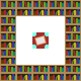
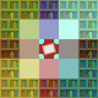

To choose enchanting levels (the 3 xp costs shown to the player in the enchant), we rely on the number of nearby bookshelves and some random values. In this version, the max level is 50 instead of 30, enchantment levels are often not shown in increasing order, more bookshelves can be used, and taking an item out of the enchanting slot and reinserting it refreshes the options.
This is a top-down view of an enchanting setup (note that bookshelf sides are shown for clarity). Bookshelves in each of these positions count to the total, either at or 1 block above the y-level of the bookshelf. This means that a total of 32 bookshelves can be in range of the table, however, the number is capped at 30 for calculation purposes. This allows a door to be added at no cost.
The image below indicates how bookshelves can be blocked off by highlighting air blocks and their associated bookshelves in the same color. A non-air block in either block of a column will prevent all of that column's bookshelves from being counted.
Now that we know what the number of bookshelves counted is, we transform it by doing each of the following:
After that calculation, the value is displayed in the slot.
We first find the enchantability of the item. This can be found in the table below:
| Material | Tool | Armor |
|---|---|---|
| Wood/Leather | 15 | 15 |
| Stone/Chain | 5 | 12 |
| Iron | 14 | 9 |
| Gold | 22 | 25 |
| Diamond | 10 | 10 |
Next, we take the enchantability and transform it by doing the following:
Finally, we select all enchantment levels which this result, which we call l, is within the bounds for. These bounds can be found in the below table.